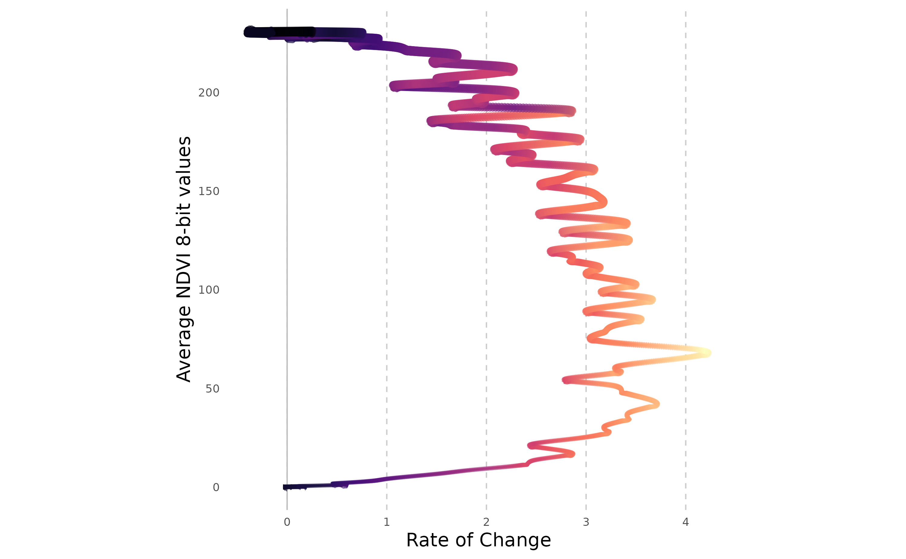
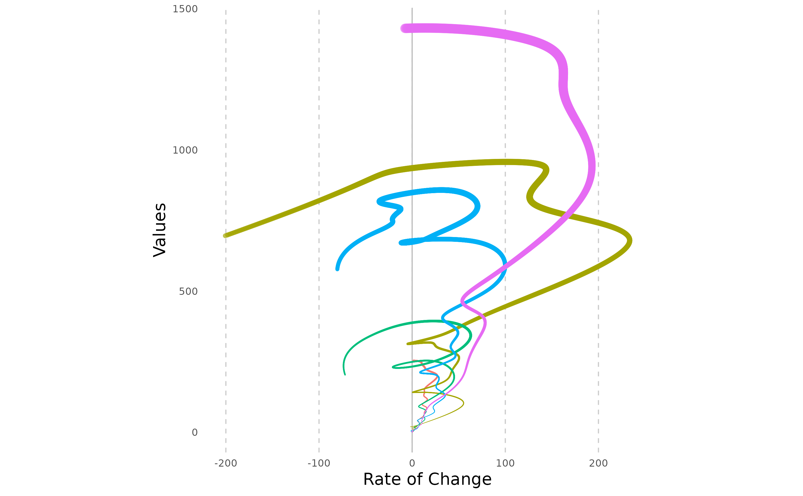
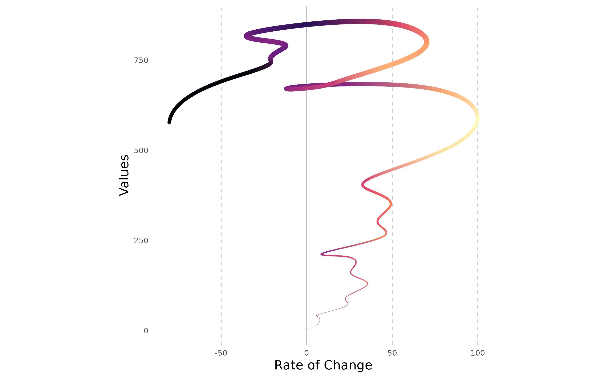

Visualising rasterdiv indexes with Helical Plots
Matteo Marcantonio, Elisa Thouverai, Duccio Rocchini
Source:vignettes/rasterdiv_05_Helical_Plots.Rmd
rasterdiv_05_Helical_Plots.RmdThis vignette demonstrates the application of
rasterdiv for visualising time-series data, such as
Rao’s index, using helical plots. The concept of
helical graphs was introduced by Danny Dorling and Kirsten
McClur as an alternative way to visualise the progression and rate of
change in a time series. This approach can be particularly useful to
look at time series of disease case progression during pandemic events,
such as during COVID-19. Here, we adapt this method for time series of
ecological indexes like Rao’s Quadratic Entropy.
NDVI Time Series of a Deciduous Forest
ndviForestTS is a list of 3x3 matrix simulating (following a sinusoidal function with some Gaussian noise) the NDVI values (8-bit) of a patch of deciduous forest in a temperate climate from 1st of January for 3 years.
# Load NDVI time series data
ndviForestTS <- readRDS(system.file("extdata", "ndviForestTS.rds", package = "rasterdiv"))
# Calculate the average NDVI for the forest patch
avgNDVI <- sapply(ndviForestTS, function(x) sum(x) / 3^2)
# Plot the average NDVI over time
dates <- seq(as.Date("2023-01-01"), by = "day", length.out = length(ndviForestTS))
plot(dates, avgNDVI, type = 'l', col = 'darkgreen', xlab = 'Day of Year', ylab = 'NDVI', main = 'Seasonal NDVI Variation')
Rao’s Index Calculation
We calculate Rao’s Index using three different alpha values (1, 5, and 10) for just one of the three years.
# Calculate Rao's Index for alpha values 1, 5, and 10
RaoT <- lapply(ndviForestTS[1:365], function(x) {
list(
a1 = paRao(x, window = 3, alpha = 1, na.tolerance = 0.1),
a5 = paRao(x, window = 3, alpha = 5, na.tolerance = 0.1),
a10 = paRao(x, window = 3, alpha = 10, na.tolerance = 0.1)
)
})
# Extract integer values for each alpha
RaoT.C <- t(sapply(RaoT, function(x) sapply(x, function(y) y[[1]][[1]][2, 2])))
colnames(RaoT.C) <- c("Rao's with alpha = 1", "Rao's Alpha = 5", "Rao's Alpha = 10")Data Preparation for Helical Plotting
The heliPrep function is designed to process time series
data for visualization using the heliPlot function. It
applies a moving average filter to smooth the data, enhancing the
helical plot’s visual appeal by producing more pronounced curves. The
filterWidth parameter allows for the customisation of the
moving window’s breadth, which considers both preceding and subsequent
values in its calculations.
Helical Plots Visualisation
With the data now appropriately smoothed, heliPlot can
generate the helical plots. This function incorporates
ggforce::geom_bspline() to further refine the smoothness of
the time series representation. The n parameter controls
the granularity of the B-spline curve, representing the total number of
points used in the interpolation process. It’s crucial that
n is set higher than the actual number of points to be
interpolated to ensure a smooth curve without any graphical
artefacts.
# Create helical plots for each alpha
heliPlot(dataPrepRao, facet = TRUE, group = "alpha", arrow = FALSE, labelInterval = 180, sizeRange = c(0.05, 2), facetScales = "free_x", n=2000)Moreover, the NDVI time series can be effectively visualised using helical plots. To accentuate the spiralling trends, which may arise from daily fluctuations in water content or artefacts in spectral data retrieval, we partition the year into two distinct sections. This approach allows us to closely observe and differentiate the subtle shifts within each phase of the annual vegetative cycle.
# Prepare NDVI data
dataPrepNDVI <- heliPrep(dates, avgNDVI, filterWidth=14)
# Create helical plot for NDVI till the spring months
heliPlot(dataPrepNDVI[1:250,], arrow = TRUE, labelInterval = 30, sizeRange = c(0.01, 2),n=10000, ylab="Average NDVI 8-bit values")
# Create helical plot for NDVI for the winter months
heliPlot(dataPrepNDVI[251:365,], arrow = TRUE, labelInterval = 30, sizeRange = c(0.01, 2),n=10000, ylab="Average NDVI 8-bit values")
These plots depict the seasonal cycle of NDVI values for a broadleaved forest patch. The values rise in spring, culminate in a peak in July (first figure), and plateau during the final summer months before diminishing from early autumn in response to leaf senescence (second figure). The x-axis demonstrates that the rate of change in NDVI is comparably stable during both the growth and decline phases. This consistency is anticipated since the values were simulated using a monotonous sinusoidal function with an overlay of Gaussian noise.
Applying helical plots to COVID-19 data
On a final note, we can visualise the trend of deaths caused by COVID-19 in the first months of the recent pandemic, by using helical plots. This method was initially used to represent the dynamics of COVID-19 case numbers and can provide insights into the progression of the pandemic over time. To begin, we must acquire the relevant COVID-19 data. Our analysis will centre on a select group of countries, with a particular emphasis on the daily confirmed cases and fatalities.
# Download data for selected countries up to a specified date.
covidCases <- COVID19::covid19(
country = c("Italy", "US", "Belgium", "Germany","France"),
level = 1,
end = "2020-04-05"
)[, c("date", "confirmed", "deaths", "population", "administrative_area_level_1")]
# Calculate daily metrics.
covidCases.df <- do.call(rbind.data.frame, lapply(
unique(covidCases$administrative_area_level_1), function(x) {
temp <- covidCases[covidCases$administrative_area_level_1%in%x,]
temp$dailyCases <- temp$confirmed - c(0,head(temp$confirmed,-1))
temp$dailyDeaths <- temp$deaths - c(0,head(temp$deaths,-1))
return(temp)
}))
# Remove NA's
covidCases.df <- na.omit(covidCases.df)We will use the heliPrep function to prepare the data for plotting. This involves smoothing the daily death counts to visualise the rate of change over time.
# Prepare data for each administrative area.
covidPrep <- lapply(unique(covidCases.df$administrative_area_level_1), function(x) {
temp <- covidCases.df[covidCases.df$administrative_area_level_1%in%x,]
outPrep <- heliPrep(dates=temp$date, values=temp$dailyDeaths, filterWidth=3)
outPrep$country=x
return(outPrep)
})
covidPrep <- do.call(rbind.data.frame,covidPrep)We now create helical plots for either a single country or for multiple countries for comparison.
# Plot for Italy.
heliPlot(covidPrep[covidPrep$country%in%"Italy",], arrow = FALSE,
labelInterval = 365, n=5000, sizeRange=c(0.01, 3))
heliPlot(covidPrep, arrow = FALSE, facet=FALSE, gr="country",
labelInterval = 365, sizeRange = c(0.1, 4), n=10000)
Customising heliPlot
heliPlot can be customised with ggplot2 functions to match specific styles or references. For example, to mimic the visualizations from The Conversation’s article on COVID-19, we can adjust the plot as follows:
heliPlot(
covidPrep,
arrow = FALSE,
facet = FALSE,
gr = "country",
labelInterval = 15,
sizeRange = c(0.01, 3),
n = 50000,
ylab = "Average Number of Deaths per Day",
xlab = "Increase or Decrease in Deaths per Day",
angle= 45
) +
scale_x_continuous(breaks = seq(-250, 300, 50)) +
scale_y_continuous(breaks = seq(0, 1400, 200)) +
scale_colour_manual(
values = c("#ad363e", "#01a0e3", "#6c5575", "#f27e32", "#1f437d")
) +
guides(colour = guide_legend(title = NULL)) +
theme(
aspect.ratio = 0.7,
legend.position = c(0.85, 0.15),
panel.border = element_rect(color = "black", fill = NA, size = 1)
) +
ggtitle("Mortality in five countries attributed to COVID-19 (January 23 to April 5, 2020).")
The customisation of HeliPlot provided above includes manual colour scales, legend adjustments, and panel border styling as a attempt to replicate the (simplified) appearance from The Conversation’s article on COVID-19.